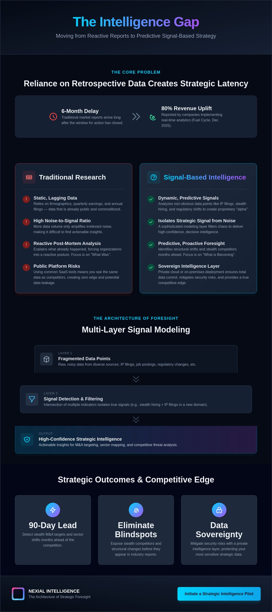

Why is your strategy still dictated by market intelligence that arrives six months after the window for action has closed? In high-stakes environments, relying on static, retrospective reports is a liability that guarantees strategic latency. Transitioning to signal based market research solves this by replacing post-mortem data with active intelligence.
Key Takeaways
- Identify structural sector shifts before they appear in industry reports by moving to a signal-based framework.
- Execute multi-layer signal modeling to transform IP filings and stealth hiring into high-confidence intelligence.
- Gain a 90-day lead on the competition by detecting stealth M&A targets before they officially enter the market.
- Establish a sovereign intelligence layer through private cloud deployment to mitigate SaaS security risks.
- Distinguish between high-noise sales triggers and deep strategic signals required for landscape analysis.
The Evolution of Market Research: From Static Reports to Dynamic Signals
Traditional market research is reaching its expiration date. It relies heavily on firmographic data like company size and geography—data points that have become commodities. In a globalized economy, anyone with a subscription can access the same static datasets. True advantage now comes from "alpha": proprietary insights derived from non-obvious data points.
Strategic intelligence differs fundamentally from traditional research. Research is often a post-mortem; it explains what happened. Strategic intelligence acts as a predictive layer, identifying the quiet movements of stealth competitors months before they become consensus.
The Problem with Strategic Latency
A published market report is often obsolete the moment it reaches an executive's desk. This occurs because data collection relies on lagging indicators like quarterly earnings. In M&A environments, discovering a target through public channels usually means you're already in a bidding war. You can't lead a market if you're reacting to its history.
Myth vs. Reality: Why "Signal-Based" is Often Misunderstood
The term "signal-based" has been systematically diluted by the marketing automation industry. Most vendors have rebranded basic lead generation as strategic intelligence, leading to a fundamental misunderstanding. If your strategy relies on public triggers like Series A announcements, you aren't conducting research; you're following a trail that's already been blazed.
Myth 1: Signals are only for Sales. Buying triggers tell you a prospect has a budget. Structural shift signals reveal that a competitor is repositioning its entire R&D department to enter a new vertical.
Multi-Layer Signal Modeling: The Architecture of Strategic Foresight
Strategic foresight is an architectural challenge, not a search problem. Surface-level web scraping only yields the obvious. High-confidence intelligence requires signal based market research built on a rigorous, multi-layer modeling framework. By layering disparate data points such as patent applications and obscure regulatory shifts, we builds a predictive map of market evolution.
Layer 1: The Foundation of Raw Data
The most valuable insights reside in unstructured data: patent filings, granular job descriptions, and shipping manifests. While most firms focus on structured databases, real intelligence lives in the messy, unorganized fragments of global commerce.

Strategic Implementation: M&A Monitoring and Sector Mapping
Implementation transforms signal modeling from an intellectual exercise into a strategic weapon. While traditional analytics focus on historical performance, signal based market research redefines the competitive boundary by focusing on intent and trajectory.
M&A Watchlist & Monitoring: Detecting the Deal
Detecting an M&A target before the competition knows they are for sale is the ultimate strategic alpha. Our approach identifies "Stealth Targets" up to 90 days before they officially go to market by tracking subtle changes in technology stacks or redirected engineering resources.
Securing the Edge: Private Cloud and On-Premises Intelligence
For high-stakes enterprise strategy, data security isn't a secondary feature; it's the foundation. Processing sensitive M&A watchlists on public platforms creates an unacceptable level of risk. True strategic edge requires sovereign control over the entire analytical stack, ensuring that your roadmap remains invisible to competitors.